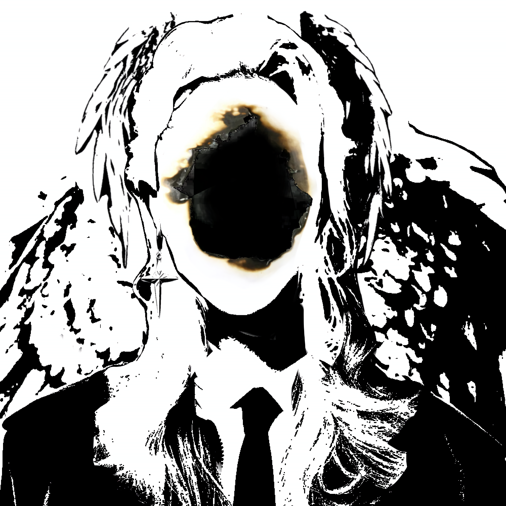

Polaris was the former Commander-in-Chief, before tragically passing away after a sudden suicide. He was the most well versed and powerful sorcerer who wielded the ability to manipulate his dreams into reality based on spells that already exist, their affectiveness varying based on how much he believed them to work.
Raised in one of the most prominent families, Polaris already showed promise as they became a child star and the face of a brighter future for the nation. A true North star. Their later career at PATRON began with smaller missions until the mission with Apollo Sallow where they moved up positions and after many more successful assignments, became the Commander-in-Chief after the passing of the previous one due to illness.
| Likes | Dislikes |
|---|---|
| Thrifting | Cameras |
| Viola | Bright Lights |
| Table Top Games | Waking up late |
| Pistachios | Getting rocks in his shoes |